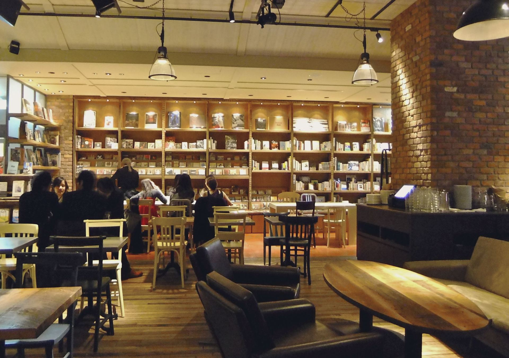
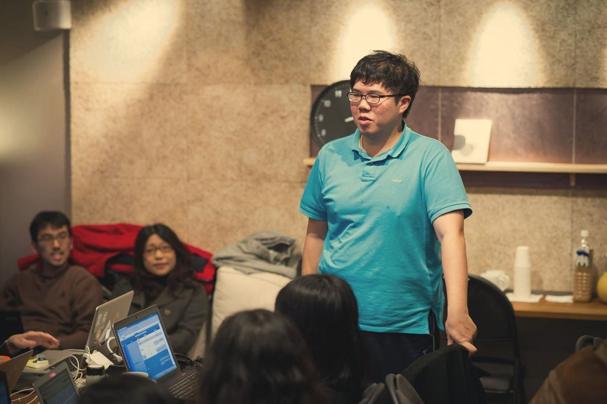
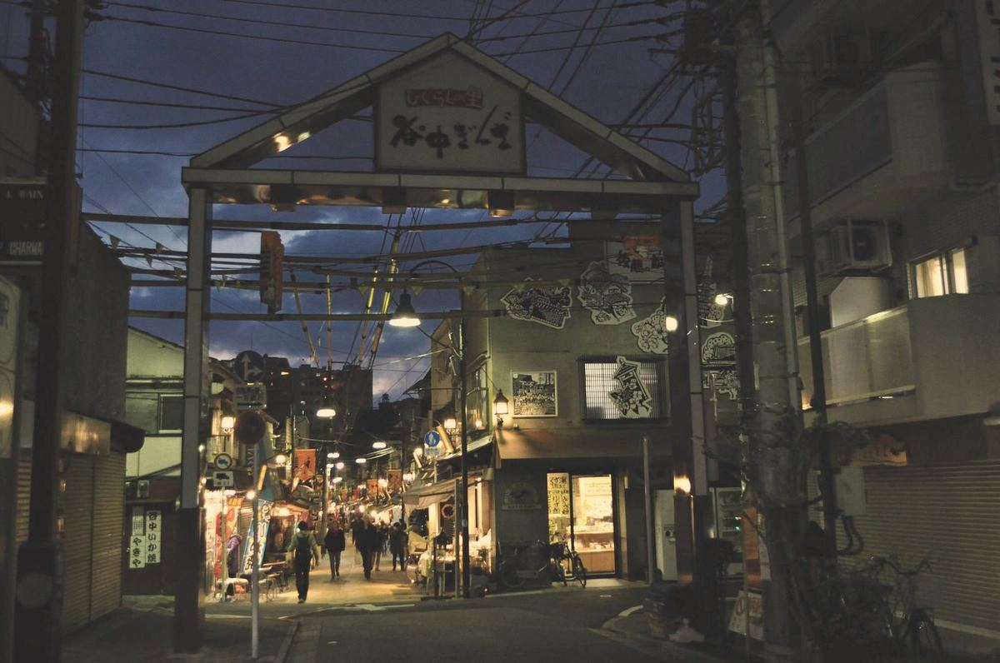
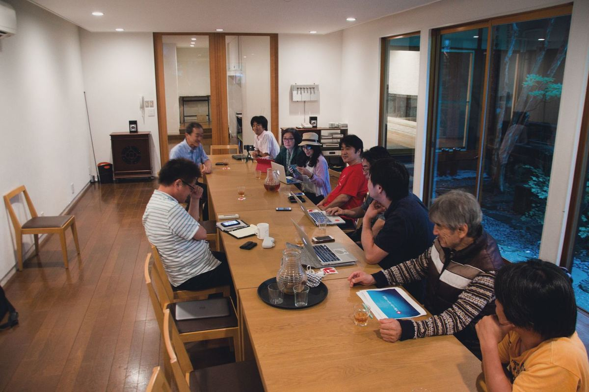

集まりの会場、夕方。
目的
市民がAIを道具に、まちの身近な課題を見つけ、仲間と解いていくコミュニティです。話せる居場所づくりにも取り組みます。貢献した人に報酬を払う仕組みをつくり、善意だけに頼らずに続けます。
運営：特定非営利活動法人 Open Coral Network

次の集まり
まちや暮らしで気になっていることを持ち寄り、AIで整理しながら話す会です。
- 日時
- [日時]
- 会場
- [会場]
- 参加費
- [参加費]
AIをこれから試したい人、何か一つ始めてみたい人、話せる仲間を探している人に向けた集まりです。専門知識や経歴は問いません。
持ち物は、気になっていることを1つ。スマホかパソコンがあれば、AIをその場で一緒に試せます。オンラインで参加できるかどうかは、日程と一緒にお知らせします。
参加登録（無料）をすると、この集まりの案内と参加者チャットへの招待がメールで届きます。
無料で参加登録する活動
AIの勉強会
AIへの指示の書き方や、AIエージェントの使い方を、その場で動かしながら学びます。自分たちでつくった道具も使います。

まちの課題を解く試み
気になる課題をAIで整理し、何をするかは人が話し合って決めます。決めたことを小さくつくって試し、うまくいったかを一緒に確かめます。

居場所づくり
仕事でも家でもない、ふらっと寄って話せる場所を、参加する人と一緒につくります。作業をしに来るだけ、話をしに来るだけでも歓迎です。
参加のしかた
このページで参加登録する
お名前とメールアドレスだけで登録できます。
チャットで自己紹介する
登録後にメールで届く招待から参加者のチャットに入り、興味のあることや得意なこと、参加のきっかけを書きます。
できる作業に手を挙げる
イベントの受付や資料の校正、AIへの指示文を試す作業など、小さなことから始められます。ノルマや決まった役割はありません。
運営の約束
- AIは整理を手伝う道具で、何をするかを決めるのは人です。
- 報酬が出る仕事は、条件を書面で示し、期日までに払います。
- 相談の内容や参加者のデータを、AIの学習には使いません。
一人ひとりの頑張りだけに頼らず、挑戦できる場をつくりたいと考えています。長く話し合うより、まず一つ形にしてみる場にします。
よくある質問
AIを使ったことがなくても参加できますか。
参加できます。集まりでは、その場で一緒にAIを動かしてみるので、はじめてでも大丈夫です。
費用はかかりますか。
参加登録は無料です。次の集まりの参加費は[参加費]です（次の集まり）。
参加をやめることはできますか。
いつでもやめられます。出入りは自由です。
参加登録
必要なのは、お名前と
登録すると、参加者チャットへの招待がメールで届きます。
参加登録を受け付けました。
次の集まりの日程と、参加者のチャットへの招待を、メールでお送りします。